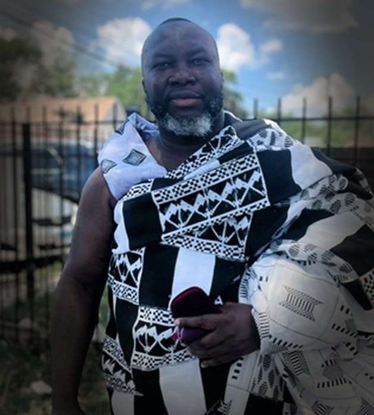
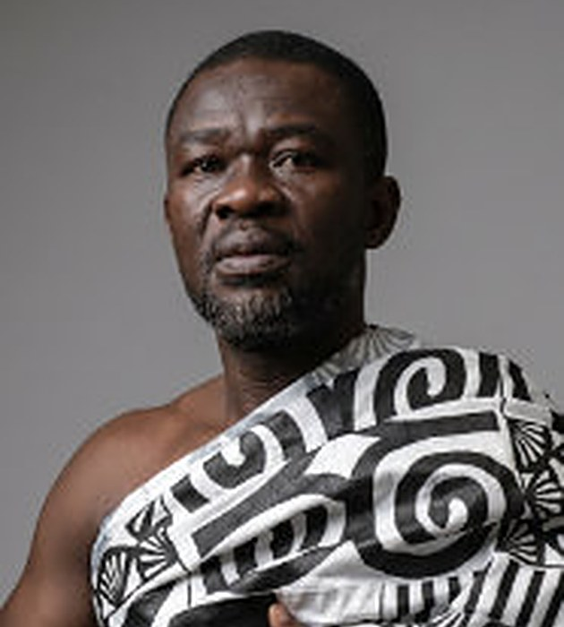
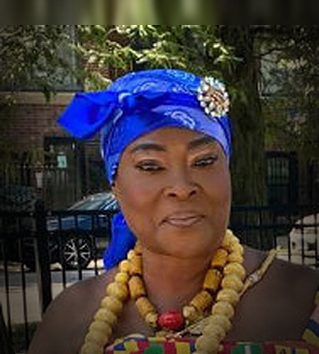
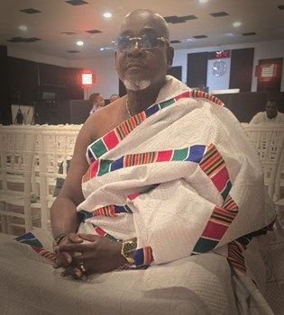
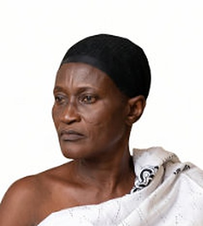
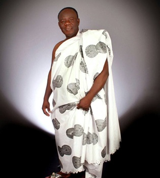

Ahenfie · The court of Asanteman Chicago
The Register of Stools.
Every stool has a name, and every name has a holder. This is the roll of the court: each title, what the office is, and who sits on it.
51 entries
The Stool
- Chicago AsantefuoheneHead of the Asante community in Chicago.Nana Kwame Frimpong Abayie
 Chicago AsantefuohemaaQueen mother of the Asante community in Chicago.Nana Afia Durowaa Nhyira
Chicago AsantefuohemaaQueen mother of the Asante community in Chicago.Nana Afia Durowaa Nhyira
Chiefs
- AkyeameheneHead of the linguists.Daasebre Kwame

NifaheneThe right wing of the formation.Daasebre Ohenebeng- KrontiheneCaretaker of the land and second in command; serves as regent.Baffour Kofi Oduro
 AkwamuheneThe vanguard: the division that goes first.Nana Kwabena Afriyie
AkwamuheneThe vanguard: the division that goes first.Nana Kwabena Afriyie- BenkumheneThe left wing of the formation.Nana Yaw Afriyie Adede
 GyaaseheneThe household: the people closest to the stool.Nana Kwabena Osei
GyaaseheneThe household: the people closest to the stool.Nana Kwabena Osei
AdontenheneThe main body: goes in front of the army.Nana Poku Boadi Yiadom- Akyempim / KyidomheneShares out whatever is to be distributed, and protects the king. The rear guard: gathers those left behind and sends them forward.Oheneba Dwaben Boateng
 ManwereheneHead of the interior.Nana Kusi Kyeremanteng
ManwereheneHead of the interior.Nana Kusi Kyeremanteng OyokoheneOf the Oyoko clan.Nana Kwasi Osei
OyokoheneOf the Oyoko clan.Nana Kwasi Osei DwantoaheneThe one to whom people turn for shelter and mercy.Baffour Agyei Ahenkan
DwantoaheneThe one to whom people turn for shelter and mercy.Baffour Agyei Ahenkan Ankobeahene“One who stays at home”: caretaker of the palace.Baffour Yaw Amakye Badu
Ankobeahene“One who stays at home”: caretaker of the palace.Baffour Yaw Amakye Badu NsumankwaheneSpiritual head of the community.Nana Akwasi Agyekum
NsumankwaheneSpiritual head of the community.Nana Akwasi Agyekum MmrantɛheneChief of the young men.Nana Kwabena Boakye Kaakyire
MmrantɛheneChief of the young men.Nana Kwabena Boakye Kaakyire SompaheneBarima Osei Kofi
SompaheneBarima Osei Kofi ApagyaheneBarimaba Akwasi Owusu Adoumi
ApagyaheneBarimaba Akwasi Owusu Adoumi- AbrafuoheneOheneba Kofi Boakye
 OkyeameThe linguist: the chief speaks through him, and he pours libation.Nana Akwasi Dankwa
OkyeameThe linguist: the chief speaks through him, and he pours libation.Nana Akwasi Dankwa
Queen mothers Mmaahemaa
- KrontihemaaCaretaker of the land and second in command; serves as regent.Nana Akosua Ako Pomaa
 AkwamuhemaaThe vanguard: the division that goes first.Ohemaa Abena Sarfowaa
AkwamuhemaaThe vanguard: the division that goes first.Ohemaa Abena Sarfowaa- AdontenhemaaThe main body: goes in front of the army.Nana Adwoah Adjeiwaa Asantewaa Manu
- BenkumhemaaThe left wing of the formation.Nana Nyarko Abronoma
 KyidomhemaaThe rear guard: gathers those left behind and sends them forward.Nana Abena Asantewaa
KyidomhemaaThe rear guard: gathers those left behind and sends them forward.Nana Abena Asantewaa
GyaasehemaaThe household: the people closest to the stool.Nana Darkowaa NifahemaaThe right wing of the formation.Nana Ama Obuor
NifahemaaThe right wing of the formation.Nana Ama Obuor OyokohemaaOf the Oyoko clan.Nana Afrakoma Sika I
OyokohemaaOf the Oyoko clan.Nana Afrakoma Sika I NkosuohemaaResponsible for development.Nana Obaa Yaa Achia
NkosuohemaaResponsible for development.Nana Obaa Yaa Achia- Iowa HemaaNana Agyeiwaa Baffour Ababio II
 Ohene MaameMaame Abena Pokuwaa
Ohene MaameMaame Abena Pokuwaa
Council of Elders
- Chicago Asantefoɔ AbusuapaninHead of the family.Nana Aboagye Manu
- Council of Elders · Former KrontiheneCaretaker of the land and second in command; serves as regent.Abusuapanin Nana Yaw Asamoah

Council of EldersAbusuapanin Nana Kofi Opoku (Joe Lee)- Council of EldersObaapanin Abena Achiaa
- Council of EldersObaapanin Betty Ama Agyeman
- Council of EldersObaapanin Sally Amoo-Gottfried Owusu
- Council of EldersNana Antwi Boasiako
- Council of EldersObaapanin Nana Adwoa Afriyie Dwomoh
- Council of EldersNana Kwaku Duah II
Enstooled in Ghana
- Akwamuhene of Atronie Traditional Council (Bono)The vanguard: the division that goes first.Nana Adututu Bofah
- NkosuohemaaResponsible for development.Nana Adjoa Boatemaa Nsutaman
- Otumfuo Buabasa Aboafohene · Organizer for Pinanko Gyase AdikrofoɔNana Kwaku Baafi Antwi
- Otumfuo BosompraNana Ampong Bosomprah

Kumasi-Chrapatre Nahniso HemaaNana Ohemaa Akosua Abuyaa Boaduwaa- Asante Bogyawe AdontenheneThe main body: goes in front of the army.Nana Kwame Mensah
Those who served before
- Former Chicago AsantefoɔheneHead of the Asante community in Chicago.Nana Addai Baffour
- Former AsantefoɔhemaaQueen mother of the Asante community in Chicago.Ohemaa Abena Amponsah
- Former SanaaheneHead of the treasury.Nana Yaw Barnieh Agyeman
- Former SanaaheneHead of the treasury.Nana Yaw Sarfo

Former SecretaryNana Aboagye Sadic Bosompem
No stool or name matches that search.
Meanings follow published accounts of Akan chieftaincy. A title with no note is left unexplained rather than guessed. To correct an entry, write to info@chicagoasanteman.org.